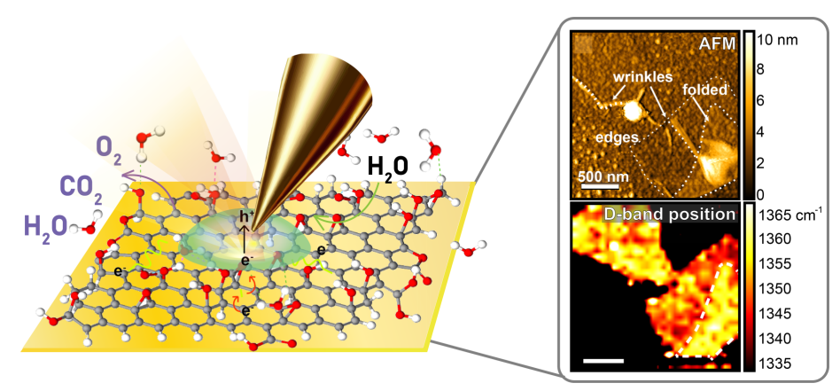

<div class="main">
        <div class="researchList pd90 wrap_box">
            
<div class="title_box">
<h3>研究重点</h3> 
<hr size="2" color="#1b4c8f"> 
<p>欢迎来到西湖大学时空分辨光谱成像实验室。我们的研究专注于理解复杂液体的超快动力学、分子相互作用和结构特性。这些系统常表现出介观结构——超越分子尺度的动态排列，同时经历影响其功能的相变过程。</p> 
<p>我们的研究体系包括但不限于：生物水与界面水，液-液相分离（LLPS）驱动的过程，脂质膜，药物递送系统，反应性深共熔溶剂（DES。深入理解这些体系的分子尺度特性是开发其应用潜力的关键。</p> 
<h4>动力学、相互作用与结构的相互关系</h4> 
<p>以上这些系统的特性和功能来源于以下三者之间的微妙平衡：分子动力学（分子的运动及其重排方式）、分子间相互作用（分子之间的吸引与排斥作用）、结构组织（分子随时间的排列方式）。</p> 
<p>我们的研究核心之一是氢键动力学。氢键的形成、断裂和重组过程是溶剂化、生化反应和能量传递等重要现象的基础。快速分子运动（时间尺度的动力学）与分子环境的空间异质性相互作用，决定了这些系统的运行机制。例如：生物水由于与蛋白质、膜和界面的相互作用，表现出与体相水截然不同的性质，影响蛋白质折叠和细胞能量流动等过程。液-液相分离驱动的生物凝聚体依赖动态分子间相互作用形成和发挥功能，为细胞分区和疾病机制提供新见解。</p> 
<h4>谱学方法</h4> 
<p>为了实现研究目标，我们采用先进的时间分辨和亚衍射极限光谱技术，包括：二维红外光谱（2DIR）、针尖增强拉曼光谱（TERS）、扫描近场光学显微镜（s-SNOM）等。这些技术使我们能够以高时空分辨率探测溶液和界面的动力学。此外，我们结合分子动力学（MD）模拟和密度泛函理论（DFT）计算，帮助解释实验数据，构建分子层面的理解。这种跨学科方法使我们能够深入解析生物系统中氢键的复杂行为。</p> 
<h4>当前研究课题</h4> 
<h5>· 大分子液-液相分离（LLPS）</h5> 
<h5>· 功能材料的界面特性</h5> 
<h5>· 氢键动力学</h5> 
<h5>· 手性与CISS效应</h5>
</div>            
            <ul class="content_list">        <li>
           <div class="item_l">
               
            </div>
            <div class="item_r">
                <h4>探索水在体相溶液、生物界面及液-液相分离系统中的超快动力学</h4>
                <a href="Publications.htm" class="enCont">Learn more</a>
                <a href="Publications.htm" class="zhCont">了解更多</a>
            </div>
        </li>
        <li>
           <div class="item_l">
               
            </div>
            <div class="item_r">
                <h4>基于TERS化学成像技术研究氧化石墨烯自还原过程，具有更高的空间分辨率和光谱灵敏度</h4>
                <a href="../assets/pdfs/publications/Nanoscale_insights_into_graphene_oxide_reduction_by_tip-enhanced_Raman_spectroscopy.pdf" class="enCont">Learn more</a>
                <a href="../assets/pdfs/publications/Nanoscale_insights_into_graphene_oxide_reduction_by_tip-enhanced_Raman_spectroscopy.pdf" class="zhCont">了解更多</a>
            </div>
        </li>
        <li>
           <div class="item_l">
               
            </div>
            <div class="item_r">
                <h4>通过振动光谱学研究脂质-水界面上的溶剂化结构和分子相互作用</h4>
                <a href="../assets/pdfs/publications/Molecular_Mechanism_of_Cell_Membrane_Protection_by_Sugars_A_Study_of_Interfacial_H-Bond_Networks.pdf" class="enCont">Learn more</a>
                <a href="../assets/pdfs/publications/Molecular_Mechanism_of_Cell_Membrane_Protection_by_Sugars_A_Study_of_Interfacial_H-Bond_Networks.pdf" class="zhCont">了解更多</a>
            </div>
        </li>
        <li>
           <div class="item_l">
               
            </div>
            <div class="item_r">
                <h4>液态水在其扩展的氢键网络中的独特特征，探索与不同水分子运动相关的水的多尺度动力学</h4>
                <a href="../assets/pdfs/publications/Importance_of_Hydrogen_Bonding_in_Crowded_Environments_A_Physical_Chemistry_Perspective.pdf" class="enCont">Learn more</a>
                <a href="../assets/pdfs/publications/Importance_of_Hydrogen_Bonding_in_Crowded_Environments_A_Physical_Chemistry_Perspective.pdf" class="zhCont">了解更多</a>
            </div>
        </li>

</ul>
        </div>
    </div>
